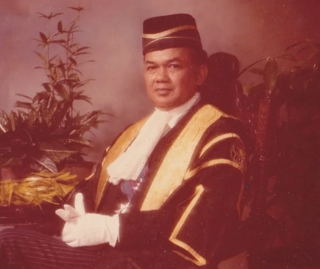
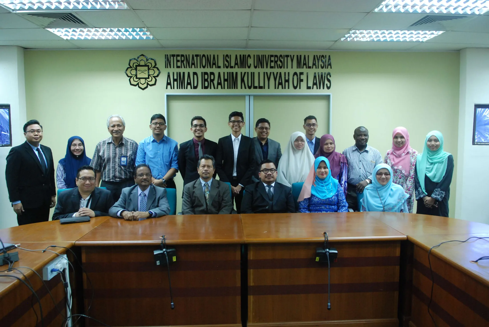
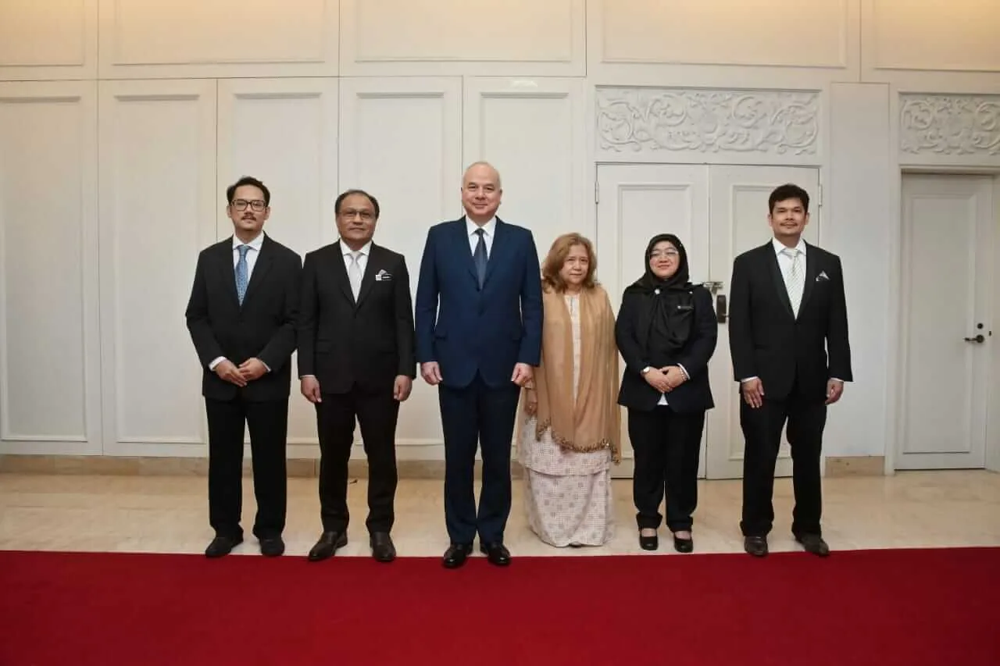

The foundation is established
Yayasan Tun Abdul Hamid is established on 9 November as a tax-exempt charitable foundation.
YAYASAN TUN ABDUL HAMID
9 NOVEMBER 1996 — 9 NOVEMBER 2026
This anniversary page is conceived as a digital exhibition: a concise chronology of legal education, academic excellence, humanitarian assistance and the people who carried the foundation forward.




Yayasan Tun Abdul Hamid is established on 9 November as a tax-exempt charitable foundation.
YTAH starts sponsoring the Best Overall Student prize for the Certificate in Legal Practice examinations.
A signed letter by Tun Abdul Hamid records his intention that his son Azizuddin join the Board to help secure continuity.
Following the founder’s death, the foundation continues under the next generation of leadership.
From 2010 onward, the foundation’s public record counts approximately 170 undergraduate Law students supported with cash bursaries and laptops.
YTAH begins sponsoring a Gold Medal and cash prize for the highest achiever in UUM’s LL.B (Hons).
Puan Ellina Abdul Majid becomes Chairman on 29 August 2022.
YTAH begins sponsoring the UniSZA Best LL.B (Hons) Student Award alongside bursary support.
The foundation will mark its thirtieth anniversary on 9 November 2026 and look toward the next generation of opportunity.
1996—2026